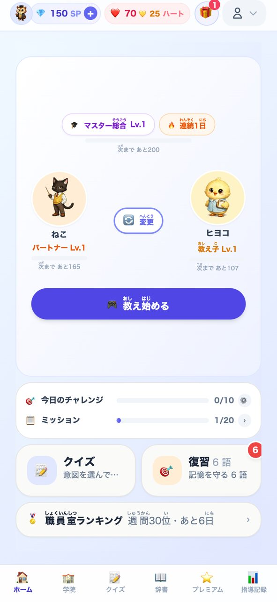
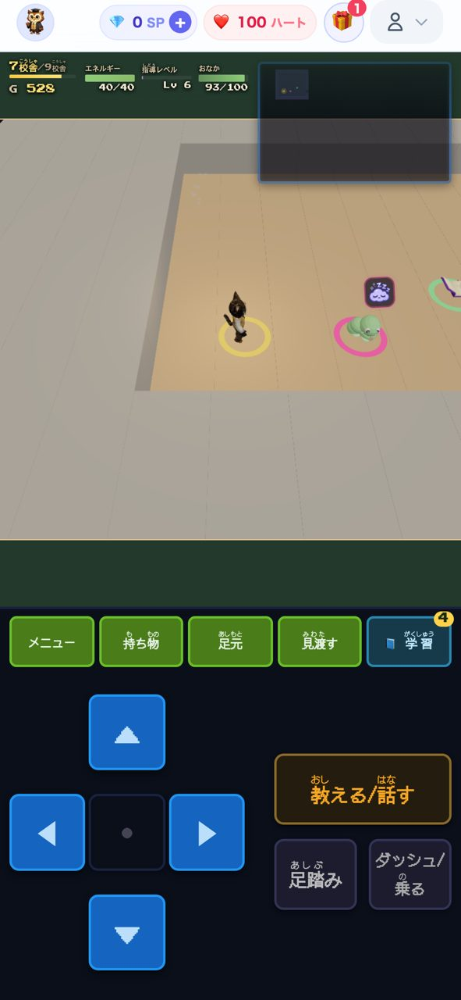
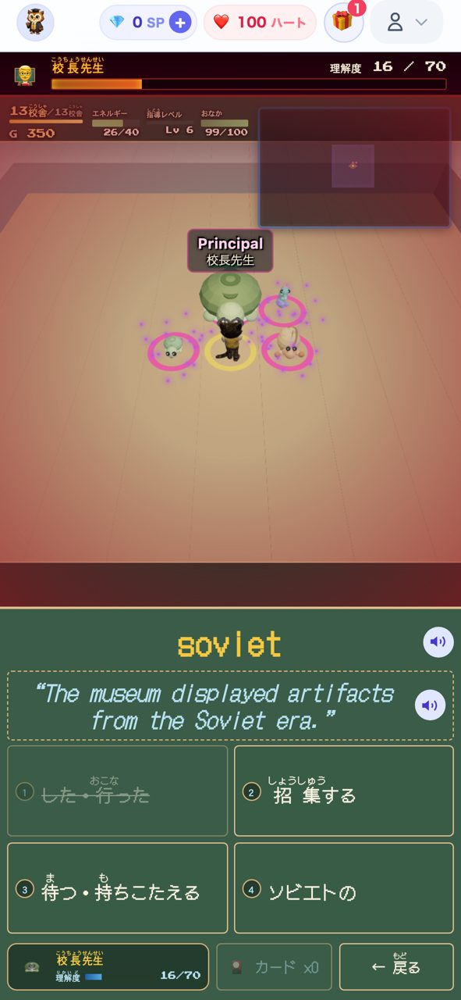
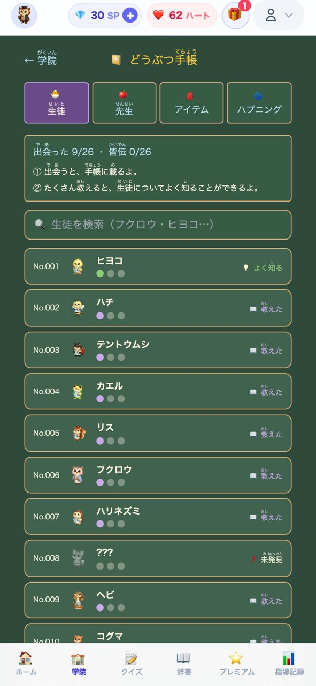
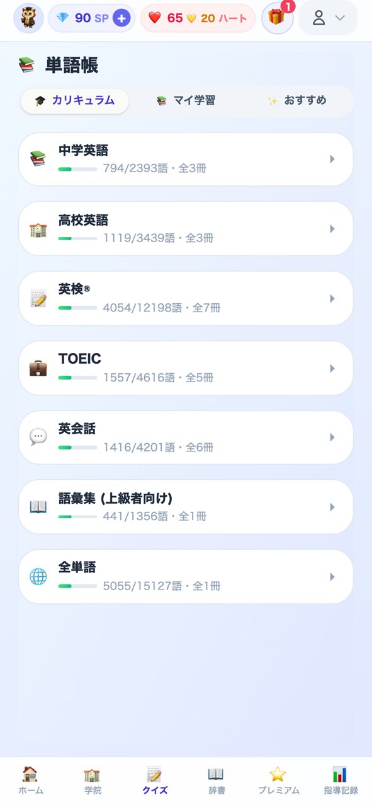

Word Spell Master
「先生になって、教える。」がキャッチコピーの、英単語学習アプリです。 ふつうの単語アプリは「出題に答える」形ですが、このアプリは視点を逆にして、プレイヤーが先生として動物の生徒に英単語を教えます。中心になっているのは3Dの学院を探索する「学院モード」で、遊ぶたびにマップが変わるローグライクと英語学習を組み合わせました。収録は約16,300語（英検・TOEIC・中学/高校英語など）。Next.js で作り、Capacitor で同じコードから iOS アプリにしています。 【生成AIの使い方】 コードの大半は Claude Code が書いています。レビューは Codex CLI と Gemini CLI に別々にさせ、実装したAIとレビューするAIを必ず分けています。AIの指摘が本当に正しいかは役割の違う複数のAIに議論させ、採用するかどうかは自分が判断しています。AIに守らせる実装ルールは24本の文書にして、作業の前に読ませています。素材も生成AIで、キャラクター画像は ChatGPT、3Dモデルは Tripo と Blender、BGM は Suno で作りました。 もともと SaaS 企業で QA（品質保証）をしていたので、AIの「できました」をうのみにせず、自動テスト（テストファイル1,700以上）と実機の両方で確かめてから出す、というやり方で品質を守っています。 2026年9月19日に App Store で公開し、RevenueCat Shipaton 2026（参加者3万人弱）で最終選考に進出しました。 ▼ブラウザでそのまま遊べます（インストール不要） https://wordspellmaster.com/ ▼iPhone 版（App Store） https://apps.apple.com/jp/app/word-spell-master/id6798952743
AI講評
Claude Code
「生徒に教える側になる」という逆転の発想で、暗記を役割のある遊びに変えている点が見事です。約16,300語の語彙と、遊ぶたびに変わる学院マップという規模感も十分で、App Store 公開とコンテスト入賞という実績が完成度を裏付けています。Claude Code に書かせたコードを Codex CLI と Gemini CLI に別々にレビューさせ、最後は自動テストと実機で確かめる体制は、生成AI開発の手本になる内容です。伸ばせる点は、ブラウザ版を開いた直後の読み込み時間の短縮です。
ChatGPT
学習者が先生となって動物の生徒に英単語を教える役割の反転が、知識を思い出して説明する能動的な学びにつながっています。変化する3D学院の探索と約16,300語の収録を組み合わせた点も、継続性と学習範囲の両面で充実しています。今後は、学習効果や苦手語の定着度を利用者が把握できる振り返りをさらに磨くと、遊びと成果の結びつきが一層伝わりやすくなりそうです。




